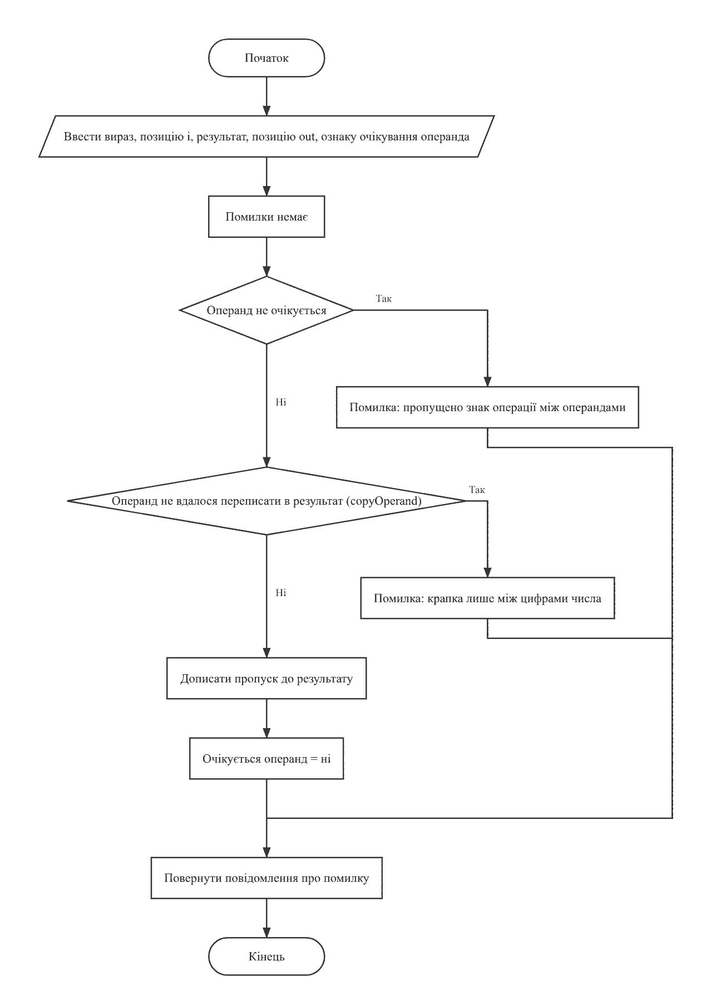
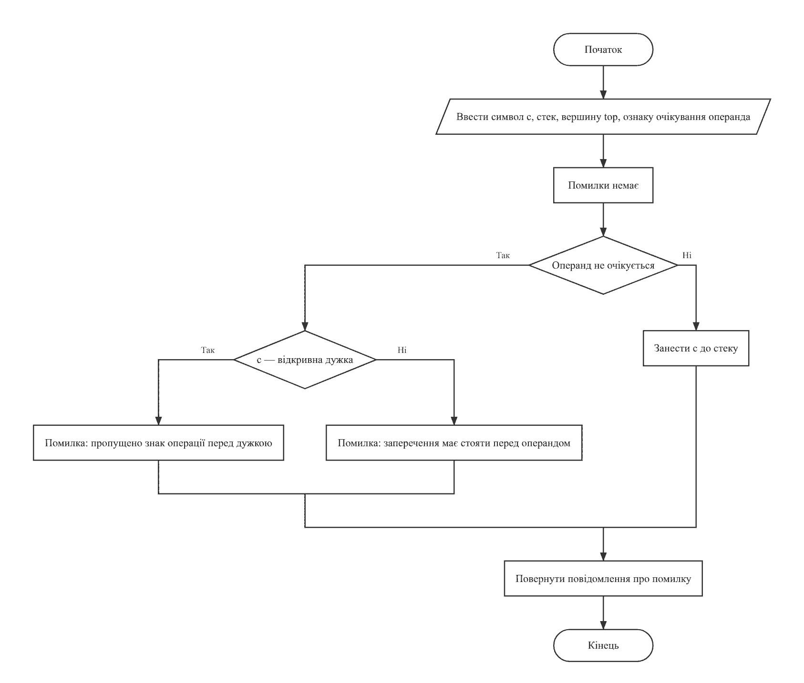
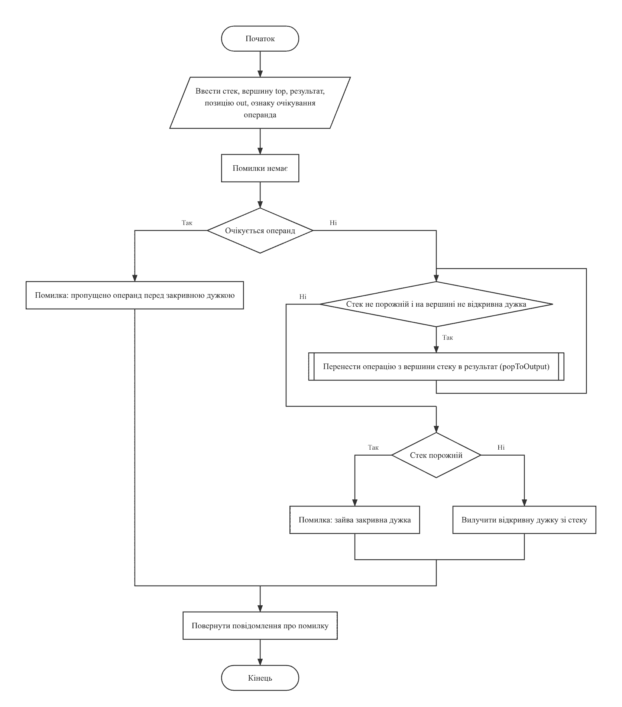
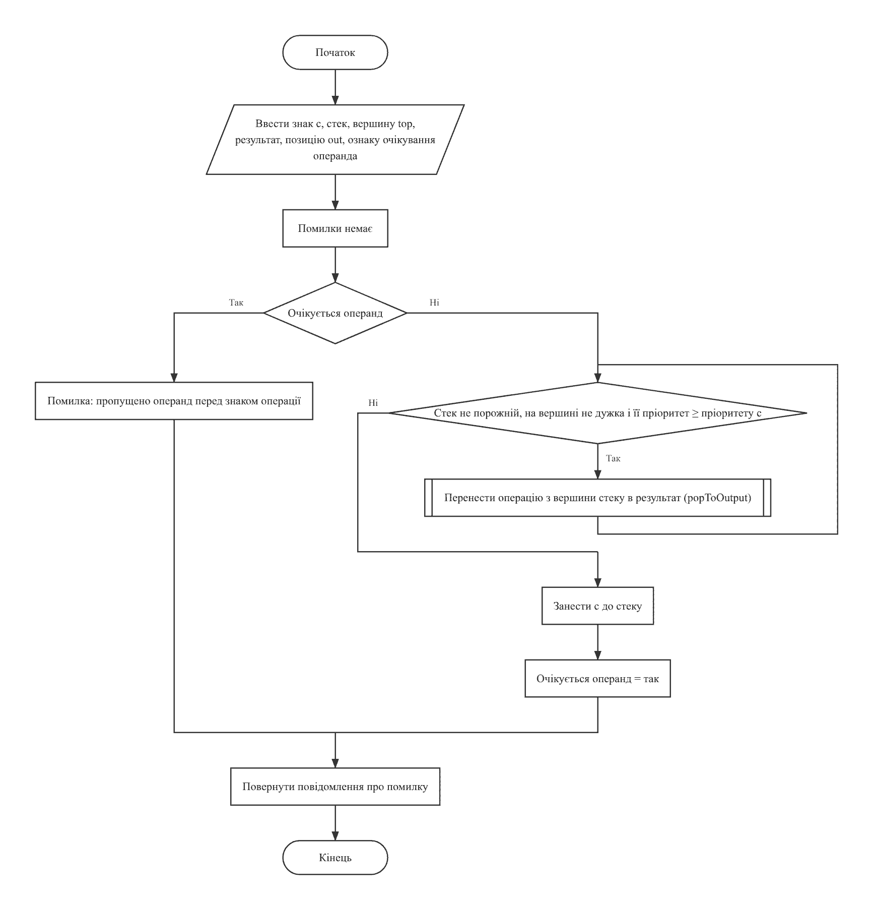

LAB9(19)Основи програмуванняLAB9(19)
Лабораторна робота №9
Обробка рядків
Варіант 19. Виконав: Одарчук Олексій, КНУ імені Тараса Шевченка, Факультет інформаційних технологій, Кафедра програмних систем і технологій, група ІПЗ-11. C17, gcc
- 2 завдання
- C
- 8 розділів
01Мета роботи#
- Вивчити подання рядків у мові C: поточну та загальну довжину, ознаку кінця рядка.
- Опанувати бібліотечні функції обробки рядків заголовного файла string.h.
- Навчитися розробляти алгоритми обробки текстів, поданих масивами рядків.
02Умова задачі#
Завдання 1 (19.1)#
Увести з клавіатури рядок слів, які відділяються символами пропуску, комами, точками. Слово є послідовністю символів без розділових символів усередині. Передбачити меню для виконання таких дій:
- підрахувати кількість слів, які містять однакову кількість голосних і приголосних літер;
- вивести на екран усі слова, довжина яких менша заданої з клавіатури;
- видалити всі слова, передостання літера яких голосна.
Завдання 2 (19.2)#
Увести з клавіатури декілька рядків символів. У кожному рядку записаний арифметичний або логічний вираз в інфіксній формі (звичайній). На екран вивести вираз у постфіксній формі. У постфіксній формі символ операції записується справа від операндів, дужки не застосовуються. Наприклад, вираз (a+b)/c, записаний в інфіксній формі, у постфіксній формі матиме вигляд: a b + c /. Необхідно для кожного виразу в інфіксній формі вивести його аналог у постфіксній формі.
Контрольний тест з умови варіанта:
Уведені рядки: (a + b) / (c - d)
(2*a - 3*d)*c + 2*b
Отримані рядки: a b + c d - /
2 a * 3 d * - c * 2 b * +
Обмеження умови: забороняється використовувати STL, методи класу
string, ітератори, контейнери. Дозволено використовувати функції заголовних
файлів string.h, ctype.h, stdlib.h.
03Аналіз задачі та теоретичне обґрунтування#
Завдання 1. Кодування UTF-8#
Функції ctype.h (isalpha, tolower та інші)
працюють з окремими байтами, а в UTF-8 українська літера займає два байти, тому:
-
isalpha()для кириличної літери дає хибний результат - вона розпадається на два байти, жоден з яких літерою не є; -
довжина слова, визначена як
strlen(), була б удвічі більшою за кількість літер; - передостанню літеру побайтово визначити неможливо.
Тому реалізовано власне декодування UTF-8 у код символу та класифікацію літер за кодами. Довжину послідовності задають старші біти першого байта:
0xxxxxxx - 1 байт (латиниця, цифри, розділові знаки) 110xxxxx - 2 байти (зокрема кирилиця) 1110xxxx - 3 байти 11110xxx - 4 байти 10xxxxxx - продовжувальний байт
Декодер перевіряє кожен продовжувальний байт: неповна чи некоректна послідовність (наприклад, текст в іншому кодуванні) дає окремий недійсний символ, тож розбір не виходить за кінець рядка.
Функції isLetterCode() та isVowelCode() охоплюють латиницю й
кирилицю. Українські голосні: а, е, є, и, і, ї, о, у, ю, я; латинські голосні: a, e, i,
o, u (латинська y голосною не вважається). Літери є, і, ї, ґ розташовані в
Unicode поза блоком А...я (0x0454, 0x0456, 0x0457, 0x0491), тому перевіряються окремо.
М'який знак ь є літерою слова (у слові "тінь" передостання літера - "н"), але не
позначає звука, тому не зараховується ні до голосних, ні до приголосних: у слові "ось"
голосна одна і приголосна одна.
Функції string.h застосовуються там, де побайтова обробка коректна:
strtok() для розбиття на слова, strlen() для визначення
довжини рядка.
Завдання 1. Функція strtok()#
strtok() замінює розділові символи нульовими, тобто змінює рядок. Між
викликами функція зберігає стан: перший виклик отримує рядок, наступні -
NULL. Вхідний рядок після розбиття окремо не потрібен, тому слова не
копіюються: масив зберігає покажчики на їх початки всередині самого рядка.
Завдання 1. Крайні випадки#
Якщо у слові менше двох літер, передостанньої літери немає: слово не видаляється, і програма повідомляє причину. Символи, що не є літерами, у підрахунках не враховуються; слово без жодної літери (наприклад, 123) не зараховується до слів з однаковою кількістю голосних і приголосних.
Довжину рядка обмежено 32 767 байтами (MAX_LINE_LENGTH = SHRT_MAX). Функція
readLine() читає рядок посимвольно в динамічний буфер: коли буфер
заповнено, його ємність подвоюється функцією realloc(), але не більше ніж
до 32 768 байтів. Решта довшого рядка відкидається, а програма виводить повідомлення
"Помилка: рядок довший за 32767 байтів." і завершується. Масив покажчиків на слова
виділяється функцією malloc() одразу на найбільшу можливу кількість слів:
сусідні слова розділяє щонайменше один символ, тому в рядку довжиною n слів не більше за
n / 2 + 1, тобто не більше 16 384. Наприкінці роботи пам'ять звільняється функцією
free().
Видалення реалізовано ущільненням масиву: покажчики на слова, що лишаються, переписуються на початок за один прохід.
Завдання 2. Алгоритм сортувальної станції#
Використано алгоритм сортувальної станції (алгоритм Дейкстри): вираз переглядається зліва направо зі стеком знаків операцій.
- операнд одразу дописується до вихідного рядка;
- відкривна дужка заноситься до стеку;
- закривна дужка виштовхує зі стеку всі операції до відкривної дужки; сама пара дужок у результат не потрапляє;
- знак операції виштовхує зі стеку всі операції з не меншим пріоритетом (операції лівоасоціативні), після чого заноситься до стеку;
- після перегляду виразу зі стеку виштовхуються всі операції, що лишилися.
Кожен вид лексеми обробляє окрема функція: readOperand() - операнд,
pushOpening() - відкривну дужку чи заперечення,
closeBracket() - закривну дужку, pushOperator() - знак
операції; перенесення операції зі стеку в результат винесено у
popToOutput(). Кожна з них повертає текст повідомлення про помилку або
NULL, якщо лексему оброблено. Головна функція перетворення
infixToPostfix() переглядає вираз, доки не трапиться перша помилка, і має
одну точку виходу. Тому її блок-схема не містить довгих ліній від кожної помилки до
кінця (рисунки 3-7).
Тому постфіксна форма не потребує дужок. Трудомісткість лінійна: кожен символ переглядається один раз, кожна операція потрапляє до стеку й виходить з нього один раз.
Умова припускає і логічні вирази, тому таблицю пріоритетів доповнено логічними
операціями. Як у булевій алгебрі та в мові C, логічне І пріоритетніше за логічне АБО:
a | b & c означає a | (b & c) і дає
a b c & |.
5 унарне заперечення ! 4 множення, ділення, остача * / % 3 додавання, віднімання + - 2 порівняння < > 1 логічне І & 0 логічне АБО |
Операнд - послідовність літер, цифр і символів підкреслення (імена змінних
a, x1 і числа 2, 35); він
переписується цілком як одна лексема. Десяткова крапка дробового числа
(3.5) припустима лише між цифрами і не більше однієї: записи
1.2.3, 1. або самотня крапка вважаються помилкою.
Обмеження реалізації. Усі операції односимвольні: логічні І та АБО записуються як
& і |, порівняння - як < і
>; двосимвольні &&, ||,
==, !=, <=, >= не
розбираються. Унарний мінус не підтримується (запис -a програма вважає
пропущеним операндом), степінь ^ не підтримується. Перелік припустимих
операцій програма виводить перед введенням.
Завдання 2. Унарне заперечення та перевірка порядку лексем#
Унарне заперечення ! стоїть перед своїм операндом, тому заноситься до стеку
без виштовхування інших операцій і потрапляє до результату після операнда:
!a & b -> a ! b &, !!a ->
a ! !.
Програма відстежує, що має йти далі: операнд (або відкривна дужка чи !) або
знак бінарної операції (або закривна дужка). Так виявляються пропущені операнди (a + * b, a +) та пропущені знаки операцій (a b).
Вирази вводяться по одному в рядку, і постфіксна форма кожного виводиться одразу після
введення; порожній рядок завершує роботу. Кожен вираз читається такою самою функцією
readLine(), тому його довжину теж обмежено 32 767 байтами: на довший вираз
програма виводить "Помилка: вираз довший за 32767 байтів." і переходить до наступного
виразу. Під стек знаків операцій і рядок результату головна функція виділяє пам'ять за
довжиною виразу n: знаків у стеку не буває більше, ніж символів у виразі, а кожен символ
дає в результаті щонайбільше два символи (сам символ і пропуск), тобто досить 2n + 1
байтів. Пам'ять виділяється до виклику infixToPostfix() і звільняється
після нього, тож помилка посеред розбору не потребує окремого звільнення пам'яті.
Вибір типів даних#
| Змінні | Тип | Чому |
|---|---|---|
завдання 1: кількість слів g_count, номери слів, довжини слів,
лічильники голосних і приголосних, довжина символу bytes, пункт
меню, гранична довжина limit
|
short |
рядок не довший за 32 767 байтів, тому жодна довжина чи кількість не перевищує
SHRT_MAX
|
завдання 2: позиція у виразі i, вершина стеку top,
пріоритет операції
|
short |
позиції не більші за 32 767; пріоритет від -1 до 5 |
завдання 2: позиція в рядку результату out |
unsigned short |
результат сягає 2 · 32 767 = 65 534 байтів: для short забагато, а в
unsigned short (до 65 535) вміщується
|
код символу Unicode code, last, prev
|
unsigned |
коди сягають 0x10FFFF (21 біт) і в 16 біт не вміщуються |
прочитаний символ c (getchar()) |
int |
функція повертає int: код байта або окреме значення
EOF
|
прочитане число number у readShort() |
int |
число спершу перевіряється на діапазон: читання одразу в
short (%hd) мовчки обрізало б старші біти, і 65537
стало б 1
|
номер виразу number у завданні 2 |
int |
кількість виразів нічим не обмежена: введення триває до порожнього рядка |
ємність буфера capacity, довжина length |
size_t |
тип розміру, який приймають malloc(), realloc() і
повертає strlen()
|
Література: Ковалюк Т.В. Алгоритмізація та програмування. - Львів.: "Магнолія 2006", 2024. - 400 с.; Deitel P., Deitel H. C++ How to Program. Pearson Education, Inc. Hoboken, New Jersey. 2017. - 3015 p.; Thomas H. Cormen, Charles E. Leiserson, Ronald L. Rivest, Clifford Stein Introduction to Algorithms, Third Edition 2009. - 960 p.
04Блок-схема алгоритму#






HIPO-діаграма показує ієрархію викликів функцій так само, як у лекції 5: зверху головна функція main, від неї стрілки ведуть до функцій, які вона викликає, нижче - функції, що викликаються з них; петля біля блока означає рекурсивний виклик. Функцію, яку викликають з кількох місць, розгорнуто лише там, де вона трапляється вперше, а довгі переліки викликів подано стовпчиком, щоб схема вміщувалася на сторінку. Діаграму побудовано за текстом програми.


Схеми побудовано за текстами програм у rombik (rombik.app) відповідно до ДСТУ 19.701-90 (ISO 5807). Структура кожної схеми точно відповідає коду функції, а блоки описують дії словами, як у методичних вказівках, без фрагментів коду.
05Текст програми#
Завдання 1 - task1.c
/*==============================================================================
task1.c. Лабораторна робота №9. Завдання 1. Варіант 19.
Тема: обробка рядків на основі бібліотеки функцій string.h.
Умова (таблиця 9.2, завдання 19.1): увести з клавіатури рядок слів, які
відділяються символами пропуску, комами, точками. Слово є послідовністю
символів без розділових символів усередині. Передбачити меню для виконання
таких дій:
- підрахувати кількість слів, які містять однакову кількість голосних
і приголосних літер;
- вивести на екран усі слова, довжина яких менша заданої з клавіатури;
- видалити всі слова, передостання літера яких голосна.
ОБМЕЖЕННЯ УМОВИ: забороняється використовувати STL, методи класу string,
ітератори тощо. Дозволено використовувати функції заголовних файлів
string.h, ctype.h, stdlib.h.
Кодування: у UTF-8 українська літера займає два байти, а функції ctype.h
(isalpha та інші) працюють з окремими байтами. Тому літери класифікуються
за кодами символів, які дає власне декодування UTF-8; функції string.h
(strtok, strlen) використовуються для побайтових дій.
Пам'ять: рядок читається в динамічний буфер, що збільшується під час
введення лише до потрібного розміру. Довжина рядка обмежена значенням
MAX_LINE_LENGTH = 32767 байтів: тоді довжини слів, кількість слів, номери
та лічильники літер гарантовано вміщуються в тип short.
Виконав: Одарчук Олексій, КНУ імені Тараса Шевченка, ФІТ, група ІПЗ-11.
Компілятор: gcc -std=c17
==============================================================================*/
#include <stdio.h>
#include <stdbool.h>
#include <stdlib.h>
#include <string.h>
#include <ctype.h>
#include <limits.h>
/* Найбільша довжина рядка в байтах. З такою межею будь-яка довжина, позиція
чи кількість, пов'язана з рядком, не перевищує SHRT_MAX. */
static const size_t MAX_LINE_LENGTH = SHRT_MAX; //найбільша довжина рядка в байтах
/* Розділові символи, якими відділяються слова (за умовою варіанта). */
static const char *const DELIMITERS = " \t\n,."; //рядок розділових символів
/* Відстань між кодами великої та малої літери: у Unicode малі літери
латиниці та основної кирилиці йдуть через сталий зсув від великих. */
static const unsigned LATIN_CASE_OFFSET = 'a' - 'A'; //зсув регістру латиниці
static const unsigned CYRILLIC_CASE_OFFSET = 0x0430 - 0x0410; //зсув регістру кирилиці
/* М'який знак: літера слова, яка не є ні голосною, ні приголосною. */
static const unsigned SOFT_SIGN = 0x044C; //код м'якого знака
/*==============================================================================
Робота з символами в кодуванні UTF-8
==============================================================================*/
//======= utf8Decode: визначити код символу та кількість байтів, які він займає ========
/*
utf8Decode - визначити код символу та кількість байтів, які він займає.
У кодуванні UTF-8 старші біти першого байта задають довжину послідовності:
0xxxxxxx - 1 байт (латиниця, цифри, розділові знаки);
110xxxxx - 2 байти (зокрема кирилиця);
1110xxxx - 3 байти;
11110xxx - 4 байти.
Продовжувальні байти мають вигляд 10xxxxxx і несуть по 6 значущих бітів.
Кожен продовжувальний байт перевіряється. Якщо послідовність неповна або
некоректна (зокрема обірвана завершальним нулем рядка), перший байт
вважається окремим недійсним символом U+FFFD. Тому функція ніколи не
"перестрибує" кінець рядка, навіть якщо текст уведено не в UTF-8.
Параметри:
s [вхідний] - покажчик на початок символу;
bytes [вихідний] - адреса змінної для кількості байтів символу.
Повертає : код символу (кодову позицію Unicode) або 0xFFFD.
Локальні змінні:
p - байти символу як беззнакові числа;
length - кількість байтів, яку задає перший байт;
code - накопичуваний код символу.
*/
unsigned utf8Decode(const char *s, short *bytes)
{
const unsigned char *p = (const unsigned char *)s; //байти символу без знака
short length = 1; //кількість байтів символу
unsigned code = p[0]; //накопичуваний код символу
/* Маска лишає старші біти першого байта, решта бітів - початок коду. */
if ((p[0] & 0x80) == 0x00) //якщо символ однобайтовий
{
*bytes = 1; //0xxxxxxx - однобайтовий символ
return code; //повернути код символу
}
else if ((p[0] & 0xE0) == 0xC0) //інакше якщо символ двобайтовий
{
length = 2; //110xxxxx: 5 значущих бітів
code = p[0] & 0x1F; //узяти 5 значущих бітів
}
else if ((p[0] & 0xF0) == 0xE0) //інакше якщо символ трибайтовий
{
length = 3; //1110xxxx: 4 значущі біти
code = p[0] & 0x0F; //узяти 4 значущі біти
}
else if ((p[0] & 0xF8) == 0xF0) //інакше якщо символ чотирибайтовий
{
length = 4; //11110xxx: 3 значущі біти
code = p[0] & 0x07; //узяти 3 значущі біти
}
else //інакше байт некоректний
{
*bytes = 1; //продовжувальний байт без початкового
return 0xFFFD; //повернути недійсний символ
}
/* Кожен продовжувальний байт додає до коду шість молодших бітів. */
for (short i = 1; i < length; ++i) //перебрати продовжувальні байти
{
if ((p[i] & 0xC0) != 0x80) //якщо байт не продовжувальний
{
*bytes = 1; //послідовність обірвана
return 0xFFFD; //повернути недійсний символ
}
code = (code << 6) | (p[i] & 0x3F); //дописати 6 бітів до коду
}
*bytes = length; //записати кількість байтів
return code; //повернути код символу
}
//================ toLowerCode: звести код літери до нижнього регістру =================
/*
toLowerCode - звести код літери до нижнього регістру.
Обробляються латиниця (A..Z), основна кирилиця (А..Я) та окремі українські
літери Є, І, Ї, Ґ, які в таблиці Unicode розташовані поза основним блоком.
Параметри: code [вхідний] - код символу.
Повертає : код відповідної малої літери або сам код, якщо він не є великою літерою.
*/
unsigned toLowerCode(unsigned code)
{
if (code >= 'A' && code <= 'Z') //якщо велика латинська літера
{
return code + LATIN_CASE_OFFSET; //латиниця
}
if (code >= 0x0410 && code <= 0x042F) //якщо велика кирилична літера
{
return code + CYRILLIC_CASE_OFFSET; //А..Я
}
if (code == 0x0404) //якщо літера Є
{
return 0x0454; //Є -> є
}
if (code == 0x0406) //якщо літера І
{
return 0x0456; //І -> і
}
if (code == 0x0407) //якщо літера Ї
{
return 0x0457; //Ї -> ї
}
if (code == 0x0490) //якщо літера Ґ
{
return 0x0491; //Ґ -> ґ
}
return code; //повернути код без змін
}
//========================= isLetterCode: чи є символ літерою ==========================
/*
isLetterCode - чи є символ літерою (латиниця або кирилиця).
Параметри: code [вхідний] - код символу.
Повертає : true - символ є літерою.
*/
bool isLetterCode(unsigned code)
{
const unsigned c = toLowerCode(code); //мала літера символу
if (c >= 'a' && c <= 'z') //якщо латинська літера
{
return true; //латиниця
}
if (c >= 0x0430 && c <= 0x044F) //якщо кирилична літера основного блоку
{
return true; //а..я
}
if (c == 0x0454 || c == 0x0456 || c == 0x0457 || c == 0x0491) //якщо є, і, ї чи ґ
{
return true; //є, і, ї, ґ
}
return false; //повернути ознаку нелітери
}
//========================= isVowelCode: чи є літера голосною ==========================
/*
isVowelCode - чи є літера голосною.
Українські голосні: а, е, є, и, і, ї, о, у, ю, я.
Латинські голосні: a, e, i, o, u.
Параметри: code [вхідний] - код символу.
Повертає : true - літера голосна.
*/
bool isVowelCode(unsigned code)
{
const unsigned c = toLowerCode(code); //мала літера символу
/* Латинські голосні. */
if (c == 'a' || c == 'e' || c == 'i' || c == 'o' || c == 'u') //латинська голосна
{
return true; //повернути ознаку голосної
}
/* Українські голосні: а(0430) е(0435) и(0438) о(043E) у(0443)
ю(044E) я(044F) є(0454) і(0456) ї(0457). */
//якщо українська голосна
if (c == 0x0430 || c == 0x0435 || c == 0x0438 || c == 0x043E || c == 0x0443 ||
c == 0x044E || c == 0x044F || c == 0x0454 || c == 0x0456 || c == 0x0457)
{
return true; //повернути ознаку голосної
}
return false; //повернути ознаку приголосної
}
//======================= charCount: кількість СИМВОЛІВ у рядку ========================
/*
charCount - кількість СИМВОЛІВ у рядку (не байтів).
Параметри: s [вхідний] - рядок у кодуванні UTF-8.
Повертає : кількість символів.
Локальні змінні:
count - лічильник символів;
bytes - довжина поточного символу в байтах.
*/
short charCount(const char *s)
{
short count = 0; //лічильник символів
short bytes = 0; //довжина символу в байтах
for (const char *p = s; *p != '\0'; p += bytes) //перебрати символи рядка
{
utf8Decode(p, &bytes); //визначити довжину символу
++count; //збільшити лічильник символів
}
return count; //повернути кількість символів
}
//====== printPadded: вивести рядок, доповнивши його пропусками до заданої ширини ======
/*
printPadded - вивести рядок, доповнивши його пропусками до заданої ширини
в СИМВОЛАХ.
Специфікатор формату виду %-24s рахує байти, тому для тексту в кодуванні
UTF-8 він вирівнює таблиці неправильно. Ширина обчислюється функцією
charCount(), яка рахує саме символи.
Параметри:
s [вхідний] - рядок, що виводиться;
width [вхідний] - потрібна ширина поля в символах.
*/
void printPadded(const char *s, short width)
{
printf("%s", s); //вивести рядок
for (short i = charCount(s); i < width; ++i) //перебрати бракуючі позиції
{
putchar(' '); //вивести пропуск
}
}
//======= countVowelsConsonants: підрахувати голосні та приголосні літери слова ========
/*
countVowelsConsonants - підрахувати голосні та приголосні літери слова.
Параметри:
word [вхідний] - слово;
vowels [вихідний] - адреса лічильника голосних;
consonants [вихідний] - адреса лічильника приголосних.
Символи, які не є літерами (цифри, дефіси всередині слова), не враховуються
в жодному з лічильників. М'який знак є літерою слова, але не позначає
звука, тому теж не потрапляє до жодного лічильника.
*/
void countVowelsConsonants(const char *word, short *vowels, short *consonants)
{
*vowels = 0; //обнулити лічильник голосних
*consonants = 0; //обнулити лічильник приголосних
short bytes = 0; //довжина символу в байтах
for (const char *p = word; *p != '\0'; p += bytes) //перебрати символи слова
{
const unsigned code = utf8Decode(p, &bytes); //код поточного символу
//якщо не літера або м'який знак
if (!isLetterCode(code) || toLowerCode(code) == SOFT_SIGN)
{
continue; //пропустити символ
}
if (isVowelCode(code)) //якщо літера голосна
{
++(*vowels); //збільшити лічильник голосних
}
else //інакше літера приголосна
{
++(*consonants); //збільшити лічильник приголосних
}
}
}
//================= penultimateLetter: код передостанньої ЛІТЕРИ слова =================
/*
penultimateLetter - код передостанньої ЛІТЕРИ слова.
Параметри:
word [вхідний] - слово;
found [вихідний] - адреса ознаки: true, якщо у слові щонайменше дві літери.
Повертає : код передостанньої літери або 0, якщо літер менше двох.
Літерами вважаються лише символи, які проходять перевірку isLetterCode(),
тому цифри та інші символи не спотворюють результат. М'який знак є літерою
слова: у слові "тінь" передостання літера - "н".
Локальні змінні:
last, prev - коди останньої та передостанньої знайдених літер;
total - кількість знайдених літер.
*/
unsigned penultimateLetter(const char *word, bool *found)
{
unsigned last = 0; //код останньої літери
unsigned prev = 0; //код передостанньої літери
short total = 0; //кількість знайдених літер
short bytes = 0; //довжина символу в байтах
for (const char *p = word; *p != '\0'; p += bytes) //перебрати символи слова
{
const unsigned code = utf8Decode(p, &bytes); //код поточного символу
if (!isLetterCode(code)) //якщо символ не літера
{
continue; //пропустити символ
}
prev = last; //зберегти попередню літеру
last = code; //запам'ятати останню літеру
++total; //збільшити кількість літер
}
*found = (total >= 2); //визначити, чи є дві літери
return *found ? prev : 0; //повернути передостанню літеру
}
/*==============================================================================
Робота зі списком слів
==============================================================================*/
/* Слова вхідного рядка: масив покажчиків на слова всередині самого рядка
та кількість слів. */
char **g_words = NULL; //масив покажчиків на слова
short g_count = 0; //кількість слів
//=========== readLine: прочитати рядок довільної довжини в динамічний буфер ===========
/*
readLine - прочитати рядок у динамічний буфер.
Символи читаються по одному; коли буфер заповнено, його ємність
подвоюється функцією realloc(). Символ '\n' до рядка не потрапляє.
До рядка записується не більше MAX_LINE_LENGTH байтів, решта рядка
введення відкидається, тому ємність буфера не перевищує
MAX_LINE_LENGTH + 1 = 32768 байтів.
Параметри: tooLong [вихідний] - адреса ознаки: true, якщо рядок введення
довший за MAX_LINE_LENGTH і його обрізано.
Повертає : покажчик на рядок, який після використання треба звільнити
функцією free(); NULL - вхідні дані вичерпано до початку рядка
або не вистачило пам'яті (їх розрізняє feof(stdin)).
Локальні змінні:
capacity - поточна ємність буфера;
length - кількість уже прочитаних символів;
line - буфер рядка;
bigger - буфер після збільшення;
c - черговий прочитаний символ.
*/
char *readLine(bool *tooLong)
{
size_t capacity = 64; //ємність буфера
size_t length = 0; //кількість прочитаних символів
char *line = malloc(capacity); //виділити буфер рядка
if (line == NULL) //якщо пам'ять не виділено
{
return NULL; //повернути ознаку помилки
}
int c = getchar(); //прочитати перший символ
if (c == EOF) //якщо дані вичерпано
{
free(line); //звільнити буфер
return NULL; //повернути ознаку кінця даних
}
*tooLong = false; //рядок поки не задовгий
while (c != '\n' && c != EOF) //повторювати до кінця рядка
{
if (length == MAX_LINE_LENGTH) //якщо досягнуто межі довжини
{
*tooLong = true; //позначити, що рядок обрізано
c = getchar(); //відкинути символ і прочитати наступний
continue; //продовжити читання до кінця рядка
}
if (length + 1 == capacity) //якщо буфер заповнено
{
capacity *= 2; //подвоїти ємність буфера
char *bigger = realloc(line, capacity); //збільшити буфер
if (bigger == NULL) //якщо пам'ять не виділено
{
free(line); //звільнити старий буфер
return NULL; //повернути ознаку помилки
}
line = bigger; //запам'ятати новий буфер
}
line[length++] = (char)c; //дописати символ до рядка
c = getchar(); //прочитати наступний символ
}
line[length] = '\0'; //завершити рядок нулем
return line; //повернути прочитаний рядок
}
//========= splitIntoWords: розібрати рядок на слова за розділовими символами ==========
/*
splitIntoWords - розібрати рядок на слова за розділовими символами.
Використано бібліотечну функцію strtok() з string.h. Особливість її
застосування: strtok ЗМІНЮЄ рядок, замінюючи розділові символи нульовими,
і зберігає внутрішній стан між викликами - тому перший виклик отримує
рядок, а наступні замість нього нульовий покажчик. Слова не копіюються:
g_words зберігає покажчики на їх початки всередині рядка.
Масив покажчиків виділяється одразу на найбільшу можливу кількість слів:
сусідні слова розділяє щонайменше один символ, тому в рядку довжиною
length слів не більше за length / 2 + 1 (при межі довжини рядка
MAX_LINE_LENGTH - не більше 16384, тому кількість має тип short).
Параметри: line [вхідний/вихідний] - рядок, що розбирається на слова.
Повертає : кількість слів або -1, якщо не вистачило пам'яті.
Локальні змінні:
token - покажчик на чергове слово;
count - лічильник слів.
*/
short splitIntoWords(char *line)
{
//виділити масив покажчиків
g_words = malloc((strlen(line) / 2 + 1) * sizeof(char *));
if (g_words == NULL) //якщо пам'ять не виділено
{
return -1; //повернути ознаку помилки
}
short count = 0; //лічильник слів
char *token = strtok(line, DELIMITERS); //виділити перше слово
while (token != NULL) //повторювати, доки є слова
{
g_words[count++] = token; //зберегти покажчик на слово
token = strtok(NULL, DELIMITERS); //виділити наступне слово
}
return count; //повернути кількість слів
}
//=========== printWords: вивести поточний список слів у табличному вигляді ============
/*
printWords - вивести поточний список слів у табличному вигляді.
Параметри: title [вхідний] - заголовок таблиці.
*/
void printWords(const char *title)
{
printf("\n%s (слів: %hd)\n", title, g_count); //вивести заголовок таблиці
if (g_count == 0) //якщо список порожній
{
printf(" список порожній\n"); //повідомити про порожній список
return; //завершити виведення
}
for (short i = 0; i < g_count; ++i) //перебрати слова списку
{
short vowels = 0; //кількість голосних слова
short consonants = 0; //кількість приголосних слова
//підрахувати голосні та приголосні
countVowelsConsonants(g_words[i], &vowels, &consonants);
printf(" %2d. ", i + 1); //вивести номер слова
printPadded(g_words[i], 22); //вивести слово з вирівнюванням
printf(" довжина %2hd, голосних %hd, приголосних %hd\n", charCount(g_words[i]),
vowels, consonants); //вивести характеристики слова
}
}
/*==============================================================================
Команди меню
==============================================================================*/
//========= cmdCountBalanced: підрахувати слова з однаковою кількістю голосних =========
/*
cmdCountBalanced - підрахувати слова з однаковою кількістю голосних
і приголосних літер.
Повертає : кількість таких слів.
*/
short cmdCountBalanced(void)
{
short found = 0; //кількість знайдених слів
//вивести заголовок результату
printf("\nСлова з однаковою кількістю голосних і приголосних:\n");
for (short i = 0; i < g_count; ++i) //перебрати слова списку
{
short vowels = 0; //кількість голосних слова
short consonants = 0; //кількість приголосних слова
//підрахувати голосні та приголосні
countVowelsConsonants(g_words[i], &vowels, &consonants);
/* Слово без жодної літери (наприклад, "123") не вважається таким,
що має однакову кількість голосних і приголосних. */
if (vowels > 0 && vowels == consonants) //якщо голосних і приголосних порівну
{
printf(" %s (голосних %hd = приголосних %hd)\n", g_words[i], vowels,
consonants); //вивести знайдене слово
++found; //збільшити кількість знайдених
}
}
if (found == 0) //якщо слів не знайдено
{
printf(" таких слів немає\n"); //повідомити про відсутність слів
}
//вивести кількість слів
printf("Кількість слів з однаковою кількістю голосних і приголосних: %hd\n", found);
return found; //повернути кількість слів
}
//========== cmdShorterThan: вивести всі слова, довжина яких менша за задану ===========
/*
cmdShorterThan - вивести всі слова, довжина яких менша за задану.
Параметри: limit [вхідний] - гранична довжина у символах.
Повертає : кількість виведених слів.
*/
short cmdShorterThan(short limit)
{
short found = 0; //кількість знайдених слів
//вивести заголовок результату
printf("\nСлова, довжина яких менша за %hd:\n", limit);
for (short i = 0; i < g_count; ++i) //перебрати слова списку
{
const short length = charCount(g_words[i]); //довжина слова в символах
if (length < limit) //якщо слово коротше за межу
{
printf(" %s (довжина %hd)\n", g_words[i], length); //вивести знайдене слово
++found; //збільшити кількість знайдених
}
}
if (found == 0) //якщо слів не знайдено
{
printf(" таких слів немає\n"); //повідомити про відсутність слів
}
return found; //повернути кількість слів
}
//====== cmdDeletePenultimateVowel: видалити всі слова, передостання літера яких =======
/*
cmdDeletePenultimateVowel - видалити всі слова, передостання літера яких
голосна.
Видалення виконується ущільненням масиву покажчиків: покажчики на слова,
що лишаються, послідовно переписуються на початок, після чого кількість
слів зменшується.
Повертає : кількість видалених слів.
Локальні змінні:
kept - кількість слів, що лишилися;
removed - кількість видалених слів.
*/
short cmdDeletePenultimateVowel(void)
{
short kept = 0; //кількість збережених слів
short removed = 0; //кількість видалених слів
//вивести заголовок результату
printf("\nВидалення слів, передостання літера яких голосна:\n");
for (short i = 0; i < g_count; ++i) //перебрати слова списку
{
bool found = false; //ознака наявності передостанньої літери
//код передостанньої літери
const unsigned code = penultimateLetter(g_words[i], &found);
if (found && isVowelCode(code)) //якщо передостання літера голосна
{
printf(" видалено: %s\n", g_words[i]); //вивести видалене слово
++removed; //збільшити кількість видалених
continue; //перейти до наступного слова
}
if (!found) //якщо передостанньої літери немає
{
printf(" збережено: %s (літер менше двох, передостанньої немає)\n",
g_words[i]); //повідомити про збережене слово
}
g_words[kept] = g_words[i]; //перенести слово на початок
++kept; //збільшити кількість збережених
}
g_count = kept; //оновити кількість слів
if (removed == 0) //якщо нічого не видалено
{
printf(" жодного слова не видалено\n"); //повідомити про відсутність видалень
}
return removed; //повернути кількість видалених
}
//========= skipLine: відкинути залишок рядка введення разом із символом '\n' ==========
/*
skipLine - відкинути залишок рядка введення разом із символом '\n'.
*/
void skipLine(void)
{
int c = getchar(); //прочитати символ
while (c != '\n' && c != EOF) //повторювати до кінця рядка
{
c = getchar(); //прочитати наступний символ
}
}
//======= restOfLineOk: перевірити залишок рядка після успішно прочитаного числа =======
/*
restOfLineOk - перевірити залишок рядка після успішно прочитаного числа.
Припустимі лише пропуски до кінця рядка або до наступного числа (тоді
символ повертається у потік і його прочитає наступний виклик scanf);
будь-який інший символ - помилка, і решта рядка відкидається.
Повертає : true - залишок рядка припустимий.
Локальні змінні: c - черговий прочитаний символ.
*/
bool restOfLineOk(void)
{
int c = getchar(); //прочитати символ
while (c == ' ' || c == '\t' || c == '\r') //пропустити пропуски
{
c = getchar(); //прочитати наступний символ
}
if (c == '\n' || c == EOF) //якщо рядок закінчився
{
return true; //повернути ознаку успіху
}
if (isdigit(c) || c == '-' || c == '+') //якщо почалося наступне число
{
ungetc(c, stdin); //повернути символ у потік
return true; //повернути ознаку успіху
}
skipLine(); //відкинути залишок рядка
return false; //повернути ознаку помилки
}
//============== readShort: прочитати ціле число із заданого діапазону ===============
/*
readShort - прочитати ціле число типу short із заданого діапазону.
Символ переведення рядка після числа з'їдається, тому наступний виклик
читає вже новий рядок. Число з "хвостом" (12abc, 3.7) відхиляється.
Число читається в змінну типу int і лише після перевірки діапазону
записується в short: специфікатор %hd мовчки обрізав би старші біти,
і, наприклад, 65537 перетворилося б на припустиме 1.
Параметри: prompt [вхідний], value [вихідний], low, high [вхідні].
Повертає : true - число прочитано; false - вхідні дані вичерпано.
Локальні змінні:
number - прочитане число до перевірки діапазону;
scanned - результат функції scanf.
*/
bool readShort(const char *prompt, short *value, short low, short high)
{
for (;;) //повторювати до коректного введення
{
int number = 0; //прочитане число (int, щоб не обрізати старші біти)
printf("%s", prompt); //вивести запрошення
const int scanned = scanf("%d", &number); //увести число
if (scanned == EOF) //якщо дані вичерпано
{
return false; //повернути ознаку кінця даних
}
if (scanned == 0) //якщо число не прочитано
{
skipLine(); //відкинути хибний рядок
}
else if (restOfLineOk() && number >= low && number <= high) //число коректне
{
*value = (short)number; //записати число, яке вміщується в short
return true; //повернути ознаку успіху
}
//вивести повідомлення про помилку
printf("Помилка: потрібне ціле число від %hd до %hd.\n", low, high);
}
}
//================================ головна функція main ================================
/*
Головна функція. Читає рядок, розбиває його на слова та виконує команди меню.
Локальні змінні:
line - вхідний рядок у динамічному буфері;
tooLong - чи довший вхідний рядок за MAX_LINE_LENGTH;
choice - обраний пункт меню;
limit - гранична довжина слова для другої команди.
*/
int main(void)
{
printf("Лабораторна робота №9, завдання 1 (варіант 19)\n"); //вивести назву роботи
printf("Виконав: студент групи ІПЗ-11 Одарчук Олексій\n"); //вивести дані виконавця
printf("Обробка рядка слів\n\n"); //вивести призначення програми
//вивести правило розділення слів
printf("Слова відділяються пропусками, комами та крапками.\n");
printf("Уведіть рядок: "); //вивести запрошення
bool tooLong = false; //ознака задовгого рядка
char *line = readLine(&tooLong); //увести рядок
if (line == NULL) //якщо рядок не прочитано
{
if (feof(stdin)) //якщо дані вичерпано
{
printf("\nВхідні дані вичерпано.\n"); //повідомити про кінець даних
}
else //інакше не вистачило пам'яті
{
//повідомити про нестачу пам'яті
printf("\nПомилка: не вистачило пам'яті.\n");
}
return 1; //завершити з помилкою
}
if (tooLong) //якщо рядок довший за межу
{
//повідомити про задовгий рядок
printf("\nПомилка: рядок довший за %zu байтів.\n", MAX_LINE_LENGTH);
free(line); //звільнити рядок
return 1; //завершити з помилкою
}
g_count = splitIntoWords(line); //розбити рядок на слова
if (g_count < 0) //якщо не вистачило пам'яті
{
printf("\nПомилка: не вистачило пам'яті.\n"); //повідомити про нестачу пам'яті
free(line); //звільнити рядок
return 1; //завершити з помилкою
}
if (g_count == 0) //якщо слів немає
{
//повідомити про відсутність слів
printf("\nУ введеному рядку немає жодного слова.\n");
free(g_words); //звільнити масив покажчиків
free(line); //звільнити рядок
return 2; //завершити без обробки
}
printWords("Вхідний список слів"); //вивести вхідний список слів
for (;;) //повторювати виконання команд
{
//вивести роздільник
printf("\n============================================================\n");
printf("Меню команд:\n"); //вивести заголовок меню
//вивести пункт 1
printf(
" 1 - підрахувати слова з однаковою кількістю голосних і приголосних\n");
printf(" 2 - вивести слова, довжина яких менша заданої\n"); //вивести пункт 2
//вивести пункт 3
printf(" 3 - видалити слова, передостання літера яких голосна\n");
printf(" 4 - вивести поточний список слів\n"); //вивести пункт 4
printf(" 5 - вихід\n"); //вивести пункт 5
short choice = 0; //обраний пункт меню
//увести номер команди
if (!readShort("Оберіть команду (1..5): ", &choice, 1, 5))
{
//повідомити про кінець даних
printf("\nВхідні дані вичерпано. Завершення роботи.\n");
break; //перервати цикл меню
}
if (choice == 1) //якщо обрано команду 1
{
cmdCountBalanced(); //підрахувати збалансовані слова
}
else if (choice == 2) //якщо обрано команду 2
{
short limit = 0; //гранична довжина слова
//увести граничну довжину
if (!readShort("Уведіть граничну довжину слова: ", &limit, 1, SHRT_MAX))
{
break; //перервати цикл меню
}
cmdShorterThan(limit); //вивести короткі слова
}
else if (choice == 3) //якщо обрано команду 3
{
//видалити слова й вивести кількість видалених
printf("Видалено слів: %hd\n", cmdDeletePenultimateVowel());
printWords("Список після видалення"); //вивести оновлений список
}
else if (choice == 4) //якщо обрано команду 4
{
printWords("Поточний список слів"); //вивести поточний список
}
else //інакше обрано вихід
{
printf("\nЗавершення роботи.\n"); //повідомити про завершення
break; //перервати цикл меню
}
}
free(g_words); //звільнити масив покажчиків
free(line); //звільнити рядок
return 0; //повернути код успіху
}
Завдання 2 - task2.c
/*==============================================================================
task2.c. Лабораторна робота №9. Завдання 2. Варіант 19.
Тема: обробка текстів, поданих масивами рядків.
Умова (таблиця 9.2, завдання 19.2): увести з клавіатури декілька рядків
символів. У кожному рядку записаний арифметичний або логічний вираз
в інфіксній формі (звичайній). На екран вивести вираз у постфіксній формі.
У постфіксній формі символ операції записується справа від операндів,
дужки не застосовуються. Наприклад, вираз (a+b)/c, записаний в інфіксній
формі, у постфіксній формі матиме вигляд: a b + c /.
Контрольний тест з умови варіанта:
уведені рядки: (a + b) / (c - d)
(2*a - 3*d)*c + 2*b
отримані рядки: a b + c d - /
2 a * 3 d * - c * 2 b * +
ОБМЕЖЕННЯ УМОВИ: забороняється використовувати STL, методи класу string,
ітератори, контейнери. Дозволено використовувати функції заголовних файлів
string.h, ctype.h, stdlib.h.
Пам'ять: кожен вираз читається в динамічний буфер, що збільшується під час
введення, а стек і рядок результату виділяються під довжину виразу.
Довжина виразу обмежена значенням MAX_LINE_LENGTH = 32767 байтів: тоді
позиції у виразі та вершина стеку вміщуються в тип short, а позиція
в рядку результату (до 2 * 32767) - в unsigned short.
Виконав: Одарчук Олексій, КНУ імені Тараса Шевченка, ФІТ, група ІПЗ-11.
Компілятор: gcc -std=c17
==============================================================================*/
#include <stdio.h>
#include <stdbool.h>
#include <stdlib.h>
#include <string.h>
#include <ctype.h>
#include <limits.h>
/* Найбільша довжина виразу в байтах. З такою межею позиції у виразі
не перевищують SHRT_MAX, а позиції в результаті - USHRT_MAX. */
static const size_t MAX_LINE_LENGTH = SHRT_MAX; //найбільша довжина виразу в байтах
//=========================== precedence: пріоритет операції ===========================
/*
precedence - пріоритет операції.
Що більше значення, то раніше виконується операція. Пріоритети звичайні
математичні, доповнені логічними операціями (як у булевій алгебрі та в
мові C, логічне І пріоритетніше за логічне АБО):
5 унарне заперечення !
4 множення, ділення, остача * / %
3 додавання, віднімання + -
2 порівняння < >
1 логічне І &
0 логічне АБО |
Обмеження реалізації: усі операції односимвольні (&&, ||, ==, !=, <=, >=
не розбираються), унарний мінус і степінь ^ не підтримуються.
Параметри: op [вхідний] - символ операції.
Повертає : пріоритет операції або -1, якщо символ операцією не є.
*/
short precedence(char op)
{
switch (op) //вибрати пріоритет за символом
{
case '!': //унарне заперечення
return 5; //повернути найвищий пріоритет
case '*':
case '/':
case '%': //мультиплікативні операції
return 4; //повернути пріоритет множення
case '+':
case '-': //адитивні операції
return 3; //повернути пріоритет додавання
case '<':
case '>': //операції порівняння
return 2; //повернути пріоритет порівняння
case '&': //логічне І
return 1; //повернути пріоритет логічного І
case '|': //логічне АБО
return 0; //повернути найнижчий пріоритет
default: //інший символ
return -1; //повернути ознаку не-операції
}
}
//====================== isOperator: чи є символ знаком операції =======================
/*
isOperator - чи є символ знаком операції.
Параметри: c [вхідний] - символ.
Повертає : true - символ є операцією.
*/
bool isOperator(char c)
{
return precedence(c) >= 0; //перевірити наявність пріоритету
}
//================= isOperandChar: чи може символ входити до операнда ==================
/*
isOperandChar - чи може символ входити до операнда.
Операндом вважається послідовність літер, цифр і символів підкреслення:
це охоплює як імена змінних (a, b, x1), так і числові сталі (2, 35).
Десяткова крапка дробового числа (3.5) обробляється окремо: вона
припустима лише між цифрами числа і не більше однієї.
Параметри: c [вхідний] - символ.
Повертає : true - символ належить операнду.
*/
bool isOperandChar(char c)
{
//перевірити літеру, цифру чи підкреслення
return isalnum((unsigned char)c) || c == '_';
}
//==== copyOperand: переписати операнд з вхідного рядка у вихідний як одну лексему =====
/*
copyOperand - переписати операнд з вхідного рядка у вихідний як одну лексему.
Ім'я змінної копіюється до першого символу, що не належить операнду.
Число може містити одну десяткову крапку, і лише між цифрами (1.5);
крапка на початку, в кінці або друга крапка (1.2.3) - помилка.
Параметри:
infix [вхідний] - вираз в інфіксній формі;
i [вх./вих.] - адреса поточної позиції у вхідному рядку;
postfix [вихідний] - вихідний рядок;
out [вх./вих.] - адреса поточної позиції запису у вихідному рядку.
Повертає : true - операнд переписано; false - некоректний запис числа.
Локальні змінні:
numeric - чи є операнд числом (починається з цифри);
dotSeen - чи вже траплялась десяткова крапка.
*/
bool copyOperand(const char *infix, short *i, char *postfix, unsigned short *out)
{
//ознака числового операнда
const bool numeric = isdigit((unsigned char)infix[*i]) != 0;
bool dotSeen = false; //ознака знайденої крапки
//перебрати символи операнда
while (isOperandChar(infix[*i]) || (numeric && infix[*i] == '.' && !dotSeen))
{
if (infix[*i] == '.') //якщо трапилася крапка
{
if (!isdigit((unsigned char)infix[*i + 1])) //якщо після крапки не цифра
{
return false; //повернути ознаку помилки
}
dotSeen = true; //запам'ятати наявність крапки
}
postfix[(*out)++] = infix[(*i)++]; //переписати символ операнда
}
return true; //повернути ознаку успіху
}
//=========== popToOutput: переписати операцію з вершини стеку до результату ===========
/*
popToOutput - переписати операцію з вершини стеку до результату.
Операція вилучається зі стеку і дописується до вихідного рядка разом
із пропуском, що відділяє її від наступної лексеми.
Параметри:
stack [вхідний] - стек знаків операцій та дужок;
top [вх./вих.] - адреса індексу вершини стеку;
postfix [вихідний] - вихідний рядок;
out [вх./вих.] - адреса поточної позиції запису у вихідному рядку.
*/
void popToOutput(const char *stack, short *top, char *postfix, unsigned short *out)
{
postfix[(*out)++] = stack[(*top)--]; //переписати операцію зі стеку
postfix[(*out)++] = ' '; //дописати пропуск
}
//======================== readOperand: обробити операнд виразу ========================
/*
readOperand - обробити операнд виразу.
Операнд переписується до результату цілком, як одна лексема, і після
нього очікується знак операції.
Параметри:
infix [вхідний] - вираз в інфіксній формі;
i [вх./вих.] - адреса поточної позиції у виразі;
postfix [вихідний] - вихідний рядок;
out [вх./вих.] - адреса поточної позиції запису в результаті;
expectOperand [вх./вих.] - адреса ознаки очікування операнда.
Повертає : NULL - операнд переписано; інакше текст повідомлення про помилку.
Локальні змінні:
error - текст повідомлення про помилку (NULL, якщо помилки немає).
*/
const char *readOperand(const char *infix, short *i, char *postfix, unsigned short *out,
bool *expectOperand)
{
const char *error = NULL; //повідомлення про помилку
if (!*expectOperand) //якщо операнд не очікується
{
error = "пропущено знак операції між операндами"; //пропущено операцію
}
else if (!copyOperand(infix, i, postfix, out)) //якщо операнд записано некоректно
{
error = "десяткова крапка припустима лише між цифрами числа"; //хибна крапка
}
else //інакше операнд переписано
{
postfix[(*out)++] = ' '; //дописати пропуск після операнда
*expectOperand = false; //очікувати знак операції
}
return error; //повернути результат обробки
}
//================ pushOpening: обробити відкривну дужку чи заперечення ================
/*
pushOpening - обробити відкривну дужку чи заперечення.
Обидва символи стоять перед операндом, тому заносяться до стеку без
виштовхування інших операцій; після них, як і раніше, очікується операнд.
Параметри:
c [вхідний] - символ '(' або '!';
stack [вихідний] - стек знаків операцій та дужок;
top [вх./вих.] - адреса індексу вершини стеку;
expectOperand [вхідний] - чи очікується зараз операнд.
Повертає : NULL - символ занесено до стеку; інакше текст повідомлення про помилку.
Локальні змінні:
error - текст повідомлення про помилку (NULL, якщо помилки немає).
*/
const char *pushOpening(char c, char *stack, short *top, bool expectOperand)
{
const char *error = NULL; //повідомлення про помилку
if (!expectOperand) //якщо операнд не очікується
{
if (c == '(') //якщо це дужка
{
error = "пропущено знак операції перед дужкою"; //пропущено операцію
}
else //інакше це заперечення
{
error = "заперечення ! має стояти перед операндом"; //хибне заперечення
}
}
else //інакше символ стоїть на своєму місці
{
stack[++(*top)] = c; //занести символ до стеку
}
return error; //повернути результат обробки
}
//======================= closeBracket: обробити закривну дужку ========================
/*
closeBracket - обробити закривну дужку.
Дужка виштовхує зі стеку всі операції до відкривної дужки; сама пара
дужок у результат не потрапляє. Після дужки, як і після операнда,
очікується знак операції, тому ознака очікування не змінюється.
Параметри:
stack [вх./вих.] - стек знаків операцій та дужок;
top [вх./вих.] - адреса індексу вершини стеку;
postfix [вихідний] - вихідний рядок;
out [вх./вих.] - адреса поточної позиції запису в результаті;
expectOperand [вхідний] - чи очікується зараз операнд.
Повертає : NULL - дужку оброблено; інакше текст повідомлення про помилку.
Локальні змінні:
error - текст повідомлення про помилку (NULL, якщо помилки немає).
*/
const char *closeBracket(char *stack, short *top, char *postfix, unsigned short *out,
bool expectOperand)
{
const char *error = NULL; //повідомлення про помилку
if (expectOperand) //якщо очікується операнд
{
error = "пропущено операнд перед закривною дужкою"; //пропущено операнд
}
else //інакше дужка стоїть на своєму місці
{
while (*top >= 0 && stack[*top] != '(') //виштовхувати операції до дужки
{
popToOutput(stack, top, postfix, out); //переписати операцію до результату
}
if (*top < 0) //якщо відкривної дужки немає
{
error = "зайва закривна дужка"; //зайва дужка
}
else //інакше відкривну дужку знайдено
{
--(*top); //вилучити '(' зі стеку
}
}
return error; //повернути результат обробки
}
//=================== pushOperator: обробити знак бінарної операції ====================
/*
pushOperator - обробити знак бінарної операції.
Знак виштовхує зі стеку всі операції з не меншим пріоритетом (усі
операції лівоасоціативні), після чого сам заноситься до стеку.
Після знака очікується операнд.
Параметри:
c [вхідний] - знак операції;
stack [вх./вих.] - стек знаків операцій та дужок;
top [вх./вих.] - адреса індексу вершини стеку;
postfix [вихідний] - вихідний рядок;
out [вх./вих.] - адреса поточної позиції запису в результаті;
expectOperand [вх./вих.] - адреса ознаки очікування операнда.
Повертає : NULL - знак оброблено; інакше текст повідомлення про помилку.
Локальні змінні:
error - текст повідомлення про помилку (NULL, якщо помилки немає).
*/
const char *pushOperator(char c, char *stack, short *top, char *postfix,
unsigned short *out, bool *expectOperand)
{
const char *error = NULL; //повідомлення про помилку
if (*expectOperand) //якщо очікується операнд
{
error = "пропущено операнд перед знаком операції"; //пропущено операнд
}
else //інакше знак стоїть на своєму місці
{
//виштовхувати операції з не меншим пріоритетом
while (*top >= 0 && stack[*top] != '(' &&
precedence(stack[*top]) >= precedence(c))
{
popToOutput(stack, top, postfix, out); //переписати операцію до результату
}
stack[++(*top)] = c; //занести операцію до стеку
*expectOperand = true; //очікувати операнд
}
return error; //повернути результат обробки
}
//========== infixToPostfix: перетворити вираз з інфіксної форми в постфіксну ==========
/*
infixToPostfix - перетворити вираз з інфіксної форми в постфіксну.
Алгоритм сортувальної станції (алгоритм Дейкстри). Вираз переглядається
зліва направо, використовується стек знаків операцій:
- операнд одразу дописується до вихідного рядка (readOperand);
- відкривна дужка заноситься до стеку (pushOpening);
- закривна дужка виштовхує зі стеку всі операції до відкривної дужки,
сама пара дужок у результат не потрапляє (closeBracket);
- знак операції виштовхує зі стеку всі операції з не меншим пріоритетом
(для лівоасоціативних операцій), після чого заноситься до стеку
(pushOperator);
- після перегляду виразу зі стеку виштовхуються всі операції, що лишилися.
Саме тому постфіксна форма не потребує дужок: порядок операцій у ній
задається взаємним розташуванням знаків.
Унарне заперечення ! стоїть перед операндом, тому заноситься до стеку
без виштовхування інших операцій і виводиться після свого операнда.
Паралельно перевіряється порядок лексем: ознака expectOperand показує,
що зараз очікується - операнд (або '(' чи '!') чи знак бінарної операції
(або ')'). Так виявляються пропущені операнди та знаки операцій.
Перегляд припиняється на першій помилці; функція має одну точку виходу.
Параметри:
infix [вхідний] - вираз в інфіксній формі;
stack [робочий] - буфер для стеку знаків операцій та дужок; знаків
у стеку не буває більше, ніж символів у виразі,
тому досить strlen(infix) байтів;
postfix [вихідний] - буфер для виразу в постфіксній формі; кожен символ
виразу дає в результаті щонайбільше два символи
(сам символ і пропуск), тому досить
2 * strlen(infix) + 1 байтів;
error [вихідний] - адреса рядка-повідомлення про помилку;
NULL, якщо вираз коректний.
Повертає : true - перетворення виконано; false - вираз некоректний.
Буфери виділяє головна функція: так вихід з помилкою не мусить
звільняти пам'ять.
Локальні змінні:
top - індекс вершини стеку (-1, якщо стек порожній);
out - поточна позиція запису у вихідному рядку;
i - поточна позиція перегляду вхідного рядка;
expectOperand - чи очікується зараз операнд;
c - поточний символ виразу.
*/
bool infixToPostfix(const char *infix, char *stack, char *postfix, const char **error)
{
short top = -1; //індекс вершини стеку
unsigned short out = 0; //позиція запису результату (до 2 * MAX_LINE_LENGTH)
short i = 0; //позиція перегляду виразу
bool expectOperand = true; //ознака очікування операнда
*error = NULL; //помилок поки немає
while (infix[i] != '\0' && *error == NULL) //перебрати символи до першої помилки
{
const char c = infix[i]; //поточний символ виразу
if (isspace((unsigned char)c)) //якщо символ є пропуском
{
++i; //пропустити символ
}
else if (isOperandChar(c)) //якщо символ починає операнд
{
//переписати операнд до результату
*error = readOperand(infix, &i, postfix, &out, &expectOperand);
}
else if (c == '(' || c == '!') //якщо відкривна дужка чи заперечення
{
*error = pushOpening(c, stack, &top, expectOperand); //занести до стеку
++i; //перейти до наступного символу
}
else if (c == ')') //якщо закривна дужка
{
//виштовхнути операції до відкривної дужки
*error = closeBracket(stack, &top, postfix, &out, expectOperand);
++i; //перейти до наступного символу
}
else if (isOperator(c)) //якщо символ є операцією
{
//виштовхнути пріоритетніші операції і занести знак до стеку
*error = pushOperator(c, stack, &top, postfix, &out, &expectOperand);
++i; //перейти до наступного символу
}
else if (c == '.') //якщо крапка поза числом
{
*error =
"десяткова крапка припустима лише між цифрами числа"; //хибна крапка
}
else //інакше символ неприпустимий
{
*error = "неприпустимий символ у виразі"; //хибний символ
}
}
if (*error == NULL && expectOperand) //якщо вираз обірвано
{
if (out == 0 && top < 0) //якщо вираз порожній
{
*error = "порожній вираз"; //порожній вираз
}
else //інакше бракує операнда
{
*error = "вираз закінчується без операнда"; //бракує операнда
}
}
/* Виштовхнути операції, що лишилися у стеку. */
while (*error == NULL && top >= 0) //поки стек не порожній і помилок немає
{
if (stack[top] == '(') //якщо лишилася відкривна дужка
{
*error = "не вистачає закривної дужки"; //незакрита дужка
}
else //інакше на вершині операція
{
popToOutput(stack, &top, postfix, &out); //переписати операцію до результату
}
}
if (*error == NULL) //якщо вираз коректний
{
if (out > 0 && postfix[out - 1] == ' ') //якщо в кінці пропуск
{
--out; //відкинути пропуск
}
postfix[out] = '\0'; //завершити рядок результату
}
return *error == NULL; //повернути ознаку успіху
}
//=========== readLine: прочитати рядок довільної довжини в динамічний буфер ===========
/*
readLine - прочитати рядок у динамічний буфер.
Символи читаються по одному; коли буфер заповнено, його ємність
подвоюється функцією realloc(). Символ '\n' до рядка не потрапляє.
До рядка записується не більше MAX_LINE_LENGTH байтів, решта рядка
введення відкидається, тому ємність буфера не перевищує
MAX_LINE_LENGTH + 1 = 32768 байтів.
Параметри: tooLong [вихідний] - адреса ознаки: true, якщо рядок введення
довший за MAX_LINE_LENGTH і його обрізано.
Повертає : покажчик на рядок, який після використання треба звільнити
функцією free(); NULL - вхідні дані вичерпано до початку рядка
або не вистачило пам'яті (їх розрізняє feof(stdin)).
Локальні змінні:
capacity - поточна ємність буфера;
length - кількість уже прочитаних символів;
line - буфер рядка;
bigger - буфер після збільшення;
c - черговий прочитаний символ.
*/
char *readLine(bool *tooLong)
{
size_t capacity = 64; //ємність буфера
size_t length = 0; //кількість прочитаних символів
char *line = malloc(capacity); //виділити пам'ять під рядок
if (line == NULL) //якщо пам'ять не виділено
{
return NULL; //повернути ознаку невдачі
}
int c = getchar(); //прочитати перший символ
if (c == EOF) //якщо введення вичерпано
{
free(line); //звільнити буфер
return NULL; //повернути ознаку вичерпання
}
*tooLong = false; //рядок поки не задовгий
while (c != '\n' && c != EOF) //читати до кінця рядка
{
if (length == MAX_LINE_LENGTH) //якщо досягнуто межі довжини
{
*tooLong = true; //позначити, що рядок обрізано
c = getchar(); //відкинути символ і прочитати наступний
continue; //продовжити читання до кінця рядка
}
if (length + 1 == capacity) //якщо буфер заповнено
{
capacity *= 2; //подвоїти ємність
char *bigger = realloc(line, capacity); //збільшити буфер
if (bigger == NULL) //якщо пам'яті не вистачило
{
free(line); //звільнити старий буфер
return NULL; //повернути ознаку невдачі
}
line = bigger; //запам'ятати новий буфер
}
line[length++] = (char)c; //записати символ у буфер
c = getchar(); //прочитати наступний символ
}
line[length] = '\0'; //завершити рядок
return line; //повернути прочитаний рядок
}
//================================ головна функція main ================================
/*
Головна функція. Читає вирази по одному в рядку, доки не буде введено
порожній рядок, і для кожного одразу виводить постфіксну форму.
Локальні змінні:
number - номер поточного виразу (int: кількість виразів нічим
не обмежена, введення триває до порожнього рядка);
line - поточний вираз в інфіксній формі;
tooLong - чи довший вираз за MAX_LINE_LENGTH;
length - довжина виразу;
stack - буфер для стеку знаків операцій;
postfix - буфер для результату перетворення;
error - повідомлення про помилку розбору.
*/
int main(void)
{
printf("Лабораторна робота №9, завдання 2 (варіант 19)\n"); //вивести назву роботи
//вивести відомості про автора
printf("Виконав: студент групи ІПЗ-11 Одарчук Олексій\n");
printf("Перетворення виразу з інфіксної форми в постфіксну\n\n"); //вивести тему
//вивести припустимі операції
printf("Припустимі операції: ! * / %% + - < > & | (усі односимвольні).\n");
//вивести обмеження
printf("Операнди - імена змінних та числа. Унарний мінус і степінь ^\n");
printf("не підтримуються.\n"); //завершити опис обмежень
//вивести інструкцію
printf("Уведіть вирази по одному в рядку; порожній рядок завершує роботу.\n");
for (int number = 1;; ++number) //перебрати вирази за номерами
{
printf("\nВираз %d: ", number); //вивести запрошення
bool tooLong = false; //ознака задовгого виразу
char *line = readLine(&tooLong); //увести вираз
if (line == NULL) //якщо рядок не прочитано
{
if (feof(stdin)) //якщо дані вичерпано
{
printf("\nВхідні дані вичерпано.\n"); //повідомити про кінець даних
return 0; //завершити програму
}
//повідомити про нестачу пам'яті
printf("\nПомилка: не вистачило пам'яті.\n");
return 1; //завершити з помилкою
}
if (tooLong) //якщо вираз довший за межу
{
//повідомити про задовгий вираз
printf(" Помилка: вираз довший за %zu байтів.\n", MAX_LINE_LENGTH);
free(line); //звільнити рядок
continue; //перейти до наступного виразу
}
const size_t length = strlen(line); //довжина виразу
if (length == 0) //якщо введено порожній рядок
{
free(line); //звільнити рядок
printf("Завершення роботи.\n"); //повідомити про завершення
return 0; //завершити програму
}
char *stack = malloc(length); //виділити пам'ять під стек
char *postfix = malloc(2 * length + 1); //виділити пам'ять під результат
if (stack == NULL || postfix == NULL) //якщо пам'яті не вистачило
{
//повідомити про нестачу пам'яті
printf(" Помилка: не вистачило пам'яті.\n");
free(postfix); //звільнити буфер результату
free(stack); //звільнити стек
free(line); //звільнити рядок
return 1; //завершити з помилкою
}
const char *error = ""; //повідомлення про помилку
//перетворити вираз у постфіксний
if (infixToPostfix(line, stack, postfix, &error))
{
printf(" Постфіксна форма: %s\n", postfix); //вивести постфіксну форму
}
else //інакше вираз некоректний
{
printf(" Помилка: %s\n", error); //вивести повідомлення про помилку
}
free(postfix); //звільнити буфер результату
free(stack); //звільнити стек
free(line); //звільнити рядок
}
}
06Результати виконання роботи#
Компіляція: make (gcc -std=c17, прапорці
-Wall -Wextra -pedantic -O2). Попереджень компілятора немає.
Нижче наведено екранні копії повних прогонів програм: кожна починається з запуску програми, містить усе введення з клавіатури й увесь вивід до завершення роботи. Прогін, що не вміщується на один екран, подано кількома послідовними частинами. Протоколи всіх прогонів, зокрема додаткових наборів вхідних даних, винесено окремими файлами за посиланнями.


sh./bin/task1 - протокол: 3 прогонів, 213 рядківРозгорнутиЗгорнути
ishawyha@op:~/OP_FirstCourse/Lab9$ ./bin/task1 # рядок українською
Лабораторна робота №9, завдання 1 (варіант 19)
Виконав: студент групи ІПЗ-11 Одарчук Олексій
Обробка рядка слів
Слова відділяються пропусками, комами та крапками.
Уведіть рядок: мова, програма. код тест дім і
Вхідний список слів (слів: 6)
1. мова довжина 4, голосних 2, приголосних 2
2. програма довжина 8, голосних 3, приголосних 5
3. код довжина 3, голосних 1, приголосних 2
4. тест довжина 4, голосних 1, приголосних 3
5. дім довжина 3, голосних 1, приголосних 2
6. і довжина 1, голосних 1, приголосних 0
============================================================
Меню команд:
1 - підрахувати слова з однаковою кількістю голосних і приголосних
2 - вивести слова, довжина яких менша заданої
3 - видалити слова, передостання літера яких голосна
4 - вивести поточний список слів
5 - вихід
Оберіть команду (1..5): 1
Слова з однаковою кількістю голосних і приголосних:
мова (голосних 2 = приголосних 2)
Кількість слів з однаковою кількістю голосних і приголосних: 1
============================================================
Меню команд:
1 - підрахувати слова з однаковою кількістю голосних і приголосних
2 - вивести слова, довжина яких менша заданої
3 - видалити слова, передостання літера яких голосна
4 - вивести поточний список слів
5 - вихід
Оберіть команду (1..5): 2
Уведіть граничну довжину слова: 4
Слова, довжина яких менша за 4:
код (довжина 3)
дім (довжина 3)
і (довжина 1)
============================================================
Меню команд:
1 - підрахувати слова з однаковою кількістю голосних і приголосних
2 - вивести слова, довжина яких менша заданої
3 - видалити слова, передостання літера яких голосна
4 - вивести поточний список слів
5 - вихід
Оберіть команду (1..5): 4
Поточний список слів (слів: 6)
1. мова довжина 4, голосних 2, приголосних 2
2. програма довжина 8, голосних 3, приголосних 5
3. код довжина 3, голосних 1, приголосних 2
4. тест довжина 4, голосних 1, приголосних 3
5. дім довжина 3, голосних 1, приголосних 2
6. і довжина 1, голосних 1, приголосних 0
============================================================
Меню команд:
1 - підрахувати слова з однаковою кількістю голосних і приголосних
2 - вивести слова, довжина яких менша заданої
3 - видалити слова, передостання літера яких голосна
4 - вивести поточний список слів
5 - вихід
Оберіть команду (1..5): 3
Видалення слів, передостання літера яких голосна:
видалено: код
видалено: дім
збережено: і (літер менше двох, передостанньої немає)
Видалено слів: 2
Список після видалення (слів: 4)
1. мова довжина 4, голосних 2, приголосних 2
2. програма довжина 8, голосних 3, приголосних 5
3. тест довжина 4, голосних 1, приголосних 3
4. і довжина 1, голосних 1, приголосних 0
============================================================
Меню команд:
1 - підрахувати слова з однаковою кількістю голосних і приголосних
2 - вивести слова, довжина яких менша заданої
3 - видалити слова, передостання літера яких голосна
4 - вивести поточний список слів
5 - вихід
Оберіть команду (1..5): 5
Завершення роботи.
ishawyha@op:~/OP_FirstCourse/Lab9$ ./bin/task1 # рядок англійською
Лабораторна робота №9, завдання 1 (варіант 19)
Виконав: студент групи ІПЗ-11 Одарчук Олексій
Обробка рядка слів
Слова відділяються пропусками, комами та крапками.
Уведіть рядок: code, data. test alpha be a
Вхідний список слів (слів: 6)
1. code довжина 4, голосних 2, приголосних 2
2. data довжина 4, голосних 2, приголосних 2
3. test довжина 4, голосних 1, приголосних 3
4. alpha довжина 5, голосних 2, приголосних 3
5. be довжина 2, голосних 1, приголосних 1
6. a довжина 1, голосних 1, приголосних 0
============================================================
Меню команд:
1 - підрахувати слова з однаковою кількістю голосних і приголосних
2 - вивести слова, довжина яких менша заданої
3 - видалити слова, передостання літера яких голосна
4 - вивести поточний список слів
5 - вихід
Оберіть команду (1..5): 1
Слова з однаковою кількістю голосних і приголосних:
code (голосних 2 = приголосних 2)
data (голосних 2 = приголосних 2)
be (голосних 1 = приголосних 1)
Кількість слів з однаковою кількістю голосних і приголосних: 3
============================================================
Меню команд:
1 - підрахувати слова з однаковою кількістю голосних і приголосних
2 - вивести слова, довжина яких менша заданої
3 - видалити слова, передостання літера яких голосна
4 - вивести поточний список слів
5 - вихід
Оберіть команду (1..5): 2
Уведіть граничну довжину слова: 5
Слова, довжина яких менша за 5:
code (довжина 4)
data (довжина 4)
test (довжина 4)
be (довжина 2)
a (довжина 1)
============================================================
Меню команд:
1 - підрахувати слова з однаковою кількістю голосних і приголосних
2 - вивести слова, довжина яких менша заданої
3 - видалити слова, передостання літера яких голосна
4 - вивести поточний список слів
5 - вихід
Оберіть команду (1..5): 3
Видалення слів, передостання літера яких голосна:
збережено: a (літер менше двох, передостанньої немає)
жодного слова не видалено
Видалено слів: 0
Список після видалення (слів: 6)
1. code довжина 4, голосних 2, приголосних 2
2. data довжина 4, голосних 2, приголосних 2
3. test довжина 4, голосних 1, приголосних 3
4. alpha довжина 5, голосних 2, приголосних 3
5. be довжина 2, голосних 1, приголосних 1
6. a довжина 1, голосних 1, приголосних 0
============================================================
Меню команд:
1 - підрахувати слова з однаковою кількістю голосних і приголосних
2 - вивести слова, довжина яких менша заданої
3 - видалити слова, передостання літера яких голосна
4 - вивести поточний список слів
5 - вихід
Оберіть команду (1..5): 5
Завершення роботи.
ishawyha@op:~/OP_FirstCourse/Lab9$ ./bin/task1 # кілька розділових символів підряд
Лабораторна робота №9, завдання 1 (варіант 19)
Виконав: студент групи ІПЗ-11 Одарчук Олексій
Обробка рядка слів
Слова відділяються пропусками, комами та крапками.
Уведіть рядок: один,,, два...три, чотири
Вхідний список слів (слів: 4)
1. один довжина 4, голосних 2, приголосних 2
2. два довжина 3, голосних 1, приголосних 2
3. три довжина 3, голосних 1, приголосних 2
4. чотири довжина 6, голосних 3, приголосних 3
============================================================
Меню команд:
1 - підрахувати слова з однаковою кількістю голосних і приголосних
2 - вивести слова, довжина яких менша заданої
3 - видалити слова, передостання літера яких голосна
4 - вивести поточний список слів
5 - вихід
Оберіть команду (1..5): 4
Поточний список слів (слів: 4)
1. один довжина 4, голосних 2, приголосних 2
2. два довжина 3, голосних 1, приголосних 2
3. три довжина 3, голосних 1, приголосних 2
4. чотири довжина 6, голосних 3, приголосних 3
============================================================
Меню команд:
1 - підрахувати слова з однаковою кількістю голосних і приголосних
2 - вивести слова, довжина яких менша заданої
3 - видалити слова, передостання літера яких голосна
4 - вивести поточний список слів
5 - вихід
Оберіть команду (1..5): 5
Завершення роботи.
sh./bin/task2 - протокол: 5 прогонів, 112 рядківРозгорнутиЗгорнути
ishawyha@op:~/OP_FirstCourse/Lab9$ ./bin/task2 # контрольний тест з умови
Лабораторна робота №9, завдання 2 (варіант 19)
Виконав: студент групи ІПЗ-11 Одарчук Олексій
Перетворення виразу з інфіксної форми в постфіксну
Припустимі операції: ! * / % + - < > & | (усі односимвольні).
Операнди - імена змінних та числа. Унарний мінус і степінь ^
не підтримуються.
Уведіть вирази по одному в рядку; порожній рядок завершує роботу.
Вираз 1: (a + b) / (c - d)
Постфіксна форма: a b + c d - /
Вираз 2: (2*a - 3*d)*c + 2*b
Постфіксна форма: 2 a * 3 d * - c * 2 b * +
Вираз 3:
Завершення роботи.
ishawyha@op:~/OP_FirstCourse/Lab9$ ./bin/task2 # пріоритети операцій
Лабораторна робота №9, завдання 2 (варіант 19)
Виконав: студент групи ІПЗ-11 Одарчук Олексій
Перетворення виразу з інфіксної форми в постфіксну
Припустимі операції: ! * / % + - < > & | (усі односимвольні).
Операнди - імена змінних та числа. Унарний мінус і степінь ^
не підтримуються.
Уведіть вирази по одному в рядку; порожній рядок завершує роботу.
Вираз 1: (a+b)/c
Постфіксна форма: a b + c /
Вираз 2: a + b * c - d
Постфіксна форма: a b c * + d -
Вираз 3: a * (b + c) * d
Постфіксна форма: a b c + * d *
Вираз 4: x > y & z < w
Постфіксна форма: x y > z w < &
Вираз 5:
Завершення роботи.
ishawyha@op:~/OP_FirstCourse/Lab9$ ./bin/task2 # помилкові вирази
Лабораторна робота №9, завдання 2 (варіант 19)
Виконав: студент групи ІПЗ-11 Одарчук Олексій
Перетворення виразу з інфіксної форми в постфіксну
Припустимі операції: ! * / % + - < > & | (усі односимвольні).
Операнди - імена змінних та числа. Унарний мінус і степінь ^
не підтримуються.
Уведіть вирази по одному в рядку; порожній рядок завершує роботу.
Вираз 1: (a + b
Помилка: не вистачає закривної дужки
Вираз 2: a + b)
Помилка: зайва закривна дужка
Вираз 3: a # b
Помилка: неприпустимий символ у виразі
Вираз 4:
Завершення роботи.
ishawyha@op:~/OP_FirstCourse/Lab9$ ./bin/task2 # пропущені операнди та знаки операцій
Лабораторна робота №9, завдання 2 (варіант 19)
Виконав: студент групи ІПЗ-11 Одарчук Олексій
Перетворення виразу з інфіксної форми в постфіксну
Припустимі операції: ! * / % + - < > & | (усі односимвольні).
Операнди - імена змінних та числа. Унарний мінус і степінь ^
не підтримуються.
Уведіть вирази по одному в рядку; порожній рядок завершує роботу.
Вираз 1: a + * b
Помилка: пропущено операнд перед знаком операції
Вираз 2: a b
Помилка: пропущено знак операції між операндами
Вираз 3: a +
Помилка: вираз закінчується без операнда
Вираз 4: ()
Помилка: пропущено операнд перед закривною дужкою
Вираз 5:
Завершення роботи.
ishawyha@op:~/OP_FirstCourse/Lab9$ ./bin/task2 # унарне заперечення
Лабораторна робота №9, завдання 2 (варіант 19)
Виконав: студент групи ІПЗ-11 Одарчук Олексій
Перетворення виразу з інфіксної форми в постфіксну
Припустимі операції: ! * / % + - < > & | (усі односимвольні).
Операнди - імена змінних та числа. Унарний мінус і степінь ^
не підтримуються.
Уведіть вирази по одному в рядку; порожній рядок завершує роботу.
Вираз 1: !a & b
Постфіксна форма: a ! b &
Вираз 2: !!a
Постфіксна форма: a ! !
Вираз 3: !(a | b)
Постфіксна форма: a b | !
Вираз 4:
Завершення роботи.07Аналіз достовірності результатів#
Достовірність результатів перевірено контрольним тестом з умови варіанта та ручним розбором контрольних рядків. Для кожної контрольної величини поруч із розрахунком наведено результат програми.
Завдання 1. Контрольний рядок українською#
Уведено рядок: мова, програма. код тест дім і (роздільники - кома, крапка,
пропуск).
| Слово | Літер (ручний підрахунок) | Голосні | Приголосні | Передостання літера | Результат програми | Статус |
|---|---|---|---|---|---|---|
| мова | 4 | о, а - 2 | м, в - 2 | в - приголосна | довжина 4, голосних 2, приголосних 2; збережено | [ OK ] |
| програма | 8 | о, а, а - 3 | п, р, г, р, м - 5 | м - приголосна | довжина 8, голосних 3, приголосних 5; збережено | [ OK ] |
| код | 3 | о - 1 | к, д - 2 | о - голосна | довжина 3; видалено | [ OK ] |
| тест | 4 | е - 1 | т, с, т - 3 | с - приголосна | довжина 4, голосних 1, приголосних 3; збережено | [ OK ] |
| дім | 3 | і - 1 | д, м - 2 | і - голосна | довжина 3; видалено | [ OK ] |
| і | 1 | і - 1 | 0 | літер менше двох | збережено з поясненням | [ OK ] |
Результати команд збігаються з ручним розбором:
- слів з однаковою кількістю голосних і приголосних - 1 ("мова");
- слів, коротших за 4 символи - 3 ("код", "дім", "і");
- видалено слів - 2 ("код", "дім").
Довжини слів пораховано в літерах, а не в байтах (побайтово "мова" мала б довжину 8). Літеру і, що лежить поза основним кириличним блоком, розпізнано як голосну, тому слово "дім" видалено.
Додатково перевірено рядок англійською та рядок з кількома роздільниками підряд (один,,, два...три, чотири): порожніх слів не утворюється.
Завдання 2. Контрольний тест з умови варіанта#
| Інфіксна форма | Очікувано за умовою | Результат програми | Збіг |
|---|---|---|---|
| (a + b) / (c - d) | a b + c d - / | a b + c d - / | [ OK ] |
| (2*a - 3*d)*c + 2*b | 2 a * 3 d * - c * 2 b * + | 2 a * 3 d * - c * 2 b * + | [ OK ] |
| (a+b)/c - приклад із тексту умови | a b + c / | a b + c / | [ OK ] |
Обидва рядки контрольного тесту відтворено символ у символ.
Завдання 2. Перевірка пріоритетів та помилкових виразів#
| Вираз | Ручний розбір | Результат програми | Статус |
|---|---|---|---|
| a + b * c - d | множення виконується першим: a b c * + d - | a b c * + d - | [ OK ] |
| a * (b + c) * d | дужки змінюють порядок: a b c + * d * | a b c + * d * | [ OK ] |
| x > y & z < w | порівняння пріоритетніші за логічне І: x y > z w < & | x y > z w < & | [ OK ] |
| (a + b | не вистачає закривної дужки | повідомлення "не вистачає закривної дужки" | [ OK ] |
| a + b) | зайва закривна дужка | повідомлення "зайва закривна дужка" | [ OK ] |
| a # b | неприпустимий символ | повідомлення "неприпустимий символ у виразі" | [ OK ] |
Перші три рядки перевіряють порядок операцій, заданий пріоритетами й дужками; останні три - вирази з незбалансованими дужками й неприпустимим символом: програма називає причину помилки.
Завдання 2. Пропущені операнди, знаки операцій і унарне заперечення#
| Вираз | Ручний розбір | Результат програми | Статус |
|---|---|---|---|
| a + * b | після знака + очікується операнд, а стоїть * | повідомлення "пропущено операнд перед знаком операції" | [ OK ] |
| a b | між двома операндами немає знака операції | повідомлення "пропущено знак операції між операндами" | [ OK ] |
| a + | після знака + вираз закінчився | повідомлення "вираз закінчується без операнда" | [ OK ] |
| () | у дужках немає операнда | повідомлення "пропущено операнд перед закривною дужкою" | [ OK ] |
| !a & b | заперечення стосується лише a: a ! b & | a ! b & | [ OK ] |
| !!a | подвійне заперечення: a ! ! | a ! ! | [ OK ] |
| !(a | b) | заперечення всієї дужки: a b | ! | a b | ! | [ OK ] |
Для некоректної послідовності лексем програма повідомляє, чого бракує; унарне заперечення записується після свого операнда.
08Висновки#
-
Реалізовано обробку рядка слів функціями
string.hіз власним декодуванням UTF-8, тож голосні, приголосні й довжини слів визначаються в літерах, а не в байтах. - Реалізовано всі три команди меню завдання 1, зокрема для слів, коротших за дві літери.
- Реалізовано перетворення інфіксного виразу в постфіксний алгоритмом сортувальної станції; контрольний тест з умови відтворено точно.
- Передбачено діагностику некоректних виразів: незбалансовані дужки, неприпустимі символи, пропущені операнди та знаки операцій.
-
Рядки й вирази читаються в динамічні буфери (
malloc,realloc,free), що збільшуються лише до потрібного розміру; довжину обмежено 32 767 байтами, тому довжини, позиції й лічильники мають типshort. -
Дотримано обмежень умови: STL, клас
stringта ітератори не використовуються. - Обидва завдання варіанта виконано в повному обсязі.